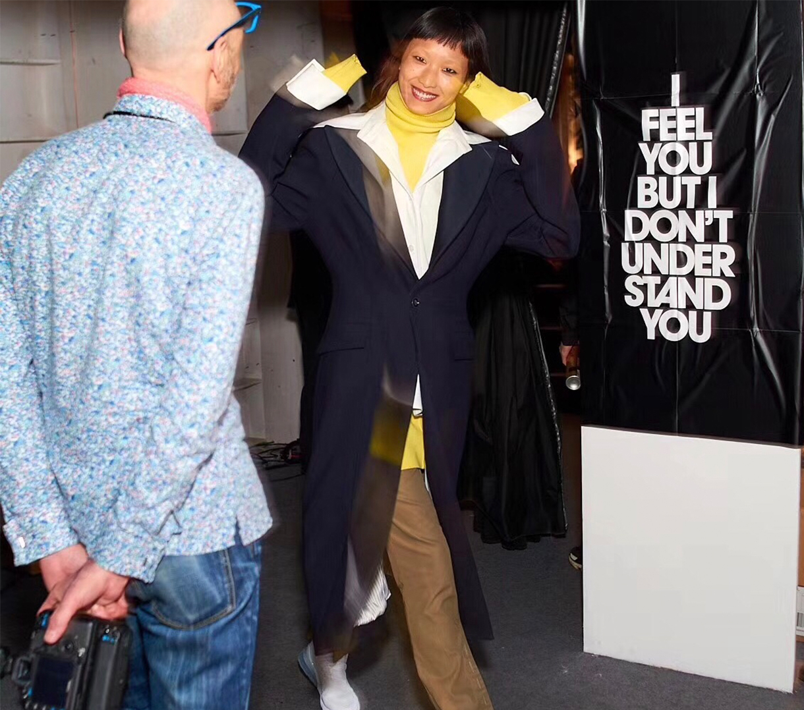
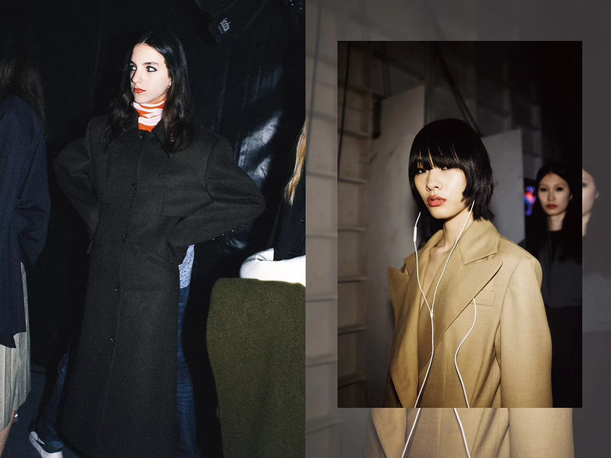

+ Designer +
Taiwan-born designer C.T.LIU switched his career from film to fashion design, graduating the Fashion Design Course at Shin Chien University in Taipei. Shortly after that, he founded his namesake label C.T.LIU in 2013; he won the overseas media reward as the Ten Most Successful Brand in Asia in the same year. Next year, opening the Mercedes Bens S/S15 Fashion Week in Asia, he won an award as the Most Potential Asian Designer. In 2016, C.T.LIU started his new journey as designer director of CHABER C+. In 2017, C.T.LIU was given the award of The Best Innovation Design of Shanghai Fashion Week.
+ History +
The brand CHABER C+ is the collaboration of designer C.T.LIU and CHABER. Continuing with the style of natural atmosphere in CHABER, LIU adds his taste of urban modern, creating this exceptional fashion brand. C+ explores the concept of simplicity without over-complicating, thus elaborating on the quality of each every item. By subtracting the number of pieces, it adds the charms, which explains the “+” in the brand name. After four seasons of work, LIU officially left CHABER, launching the brand-new season 18A/W as the brand C+plus SERIES. Besides carrying on with the pragmatism concept, C+ is upgraded with more lines and categories in details.
+ Identity +
The brand goes with a contemporary woman’s fashion attitude, includes unconventional beauty, graceful self-appreciation, and a ittle bit of violation on eternity, through the unorthodox way of cutting and use of materials, deconstruction, and fabric development.